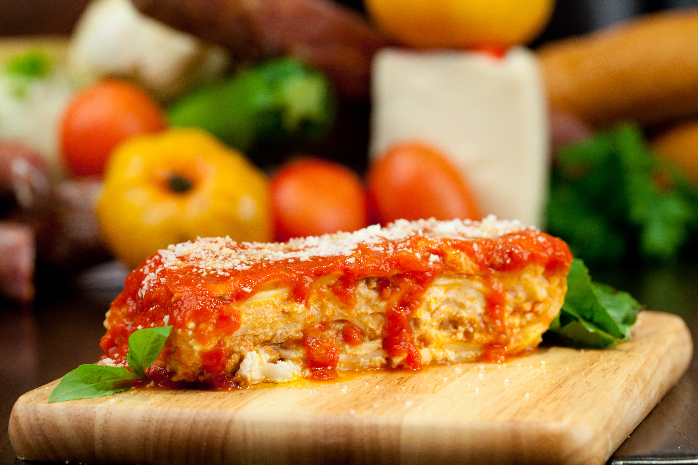
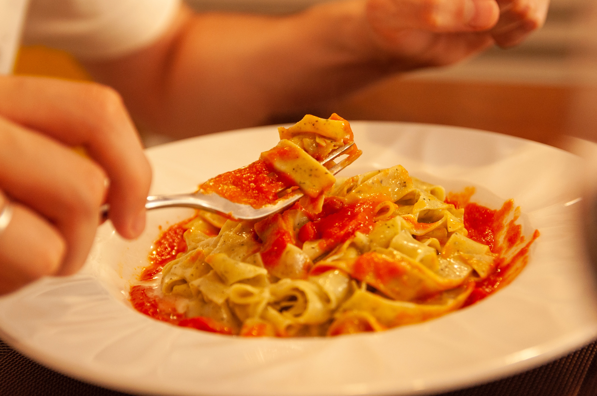

Podczas moich wakacji we Włoszech miałem okazję odwiedzić wiele uroczych
restauracji. Jednak to, co mnie zaskoczyło, to autentyczny smak włoskiej
kuchni. W restauracjach w Rzymie, Neapolu i Bari miałem okazję spróbować
pysznych spaghetti, pizzy, tiramisu i wielu innych włoskich przysmaków.
Każdy posiłek był prawdziwym doświadczeniem kulinarnej podróży przez
Włochy.


Góry
We Włoszech nie tylko morze ma do zaoferowania wspaniałe widoki. Kraje
te są również znane z pięknych górskich krajobrazów. Podczas mojej
wizyty w Alpach Włoskich miałem możliwość podziwiania majestatycznych
szczytów i malowniczych dolin. Spacerując po górskich szlakach,
doświadczyłem spokoju i harmonii, jakie oferuje przyroda.
Nowo poznane osoby
Podczas podróży we Włoszech poznałem wielu ciekawych ludzi. Wspólnie z
innymi turystami i lokalnymi mieszkańcami zwiedzaliśmy miasta,
dzieliliśmy się doświadczeniami i historiami. To było niesamowite
doświadczenie, które pozwoliło mi poznać różne kultury i tworzyć trwałe
przyjaźnie. Spotkanie nowych znajomych było jednym z najpiękniejszych
aspektów mojej podróży.